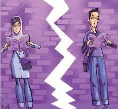

|
|

افزایش فشار جهت اجرای طرح تفکیک جنسیتی در دانشگاه ها
شنبه18 تیر 1390
دانشجونیوز: پس از اظهارات محمود احمدی نژاد در ضرورت توقف اجرای طرح تفکیک جنسیتی در دانشگاه ها، برخی از مراجع تقلید و نمایندگان اصولگرای مجلس به این اظهارات واکنش نشان دادند. چندی پیش محمود احمدی نژاد در نامه ای خطاب به وزاری علوم و بهداشت ضمن سطحی و غیرعالمانه توصیف کردن طرح تفکیک جنسیتی در دانشگاه ها، خواستار توقف اجرای این طرح شده بود.
به گزارش دانشجونیوز، محمود احمدی نژاد در حالی خواستار توقف اجرای این طرح شده، که برخی از رسانه های وابسته به حاکمیت با پوشش خبری گسترده اظهارات مراجع تقلید و موافقان تفکیک جنسیتی در دانشگاه ها، سعی در اجرای این طرح از سال تحصیلی آینده دارند.
آیت الله مکارم شیرازی، ضمن نا امیدکننده خواندن اظهارات محمود احمدی نژاد، خواستار اجرای این طرح و هم چنین بازنشسته کردن اساتید منتقد در دانشگاه ها شد. به گزارش مهر، وی که در نماز جمعه مشهد سخن می گفت، بیان کرد: "خبری را امروز شنیدم که بسیار متاثر شدم و آن این که وزیر علوم که بنده شجاعت و درایت ایشان را مطلع هستم قصد داشتند دو طرح را اجرا کنند، اول اینکه برخی از اساتید دانشگاهها را که اصول دین و مذهب را زیر سوال می برند بازنشسته کنند، دومین اقدام ایشان این بود که دختران و پسران را در دانشگاهها به تدریج و از پایه جدا کنند."
وی در ادامه با اشاره به نامه محمود احمدی نژاد به وزرای علوم و بهداشت افزود: "متاسفانه از بالا دستور دادند نباید چنین کاری را انجام بدهید. اولا نباید دست به اساتید بزنید و ثانیا مساله جداسازی یک امر سطحی و غیرحکیمانه است، شنیدن اینگونه مسائل انسان را ناامید می کند."
احمد جنتی نیز در نماز جمعه تهران ضمن انتقاد تلویحی از احمدی نژاد، گفت: "نمی دانم چرا عدهای حاضر نیستند در رابطه با حجاب نه زیر بار شرع و نه زیر بار قانون بروند. اگر مسلمانید آیات قرآن چنین پیامی دارد. اگر در اسلامیت خود تردید دارید قانون را رعایت کنید. قانون می گوید عفاف و حجاب باید رعایت شود."
آیت الله استادی نیز در نماز جمعه قم بیان کرد: "بعد از انجام کلی مطالعات از سوی دلسوزان، آنها به این نتیجه رسیدند که باید فضای دانشگاهها از نظر اختلاط جنسیتی ساماندهی شود و خانمها و آقایان در فضایی جداگانه تحصیل کنند اما متأسفانه شاهد آن هستیم که به یکباره رئیس جمهور به وزاری علوم و بهداشت نامه مینویسد و این امر را کار غیر عالمانه معرفی میکند... رئیس جمهور با این اقدام خود همه تلاشها را خنثی کرد و اگر ایشان نظری در این رابطه دارند باید در خفا بگویند نه اینکه در نامه عنوان کند."
احمد خاتمی نیز چندی پیش ضمن انتقاد از کسانی که مخالفت آیت الله خمینی با کشیدن دیوار بین کلاس های درس جهت تفکیک دانشجویان دختر و پسر را در گذشته مطرح می کنند، بیان کرد که باید اقتضائات زمانی و آماده بودن شرایط و امکانات را در نظر گرفت.وی نیز از موافقان طرح تفکیک جنسیتی در دانشگاه ها می باشد.